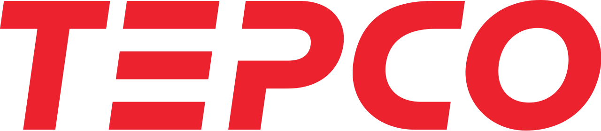
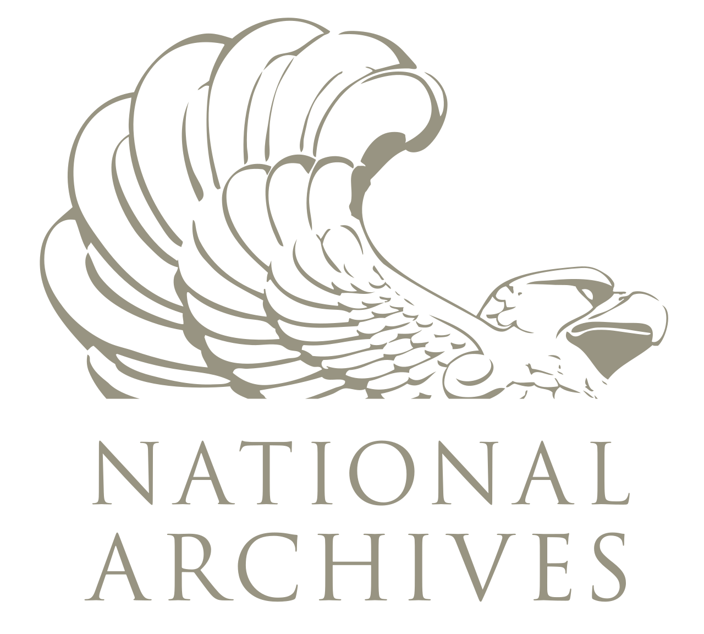

홈 > 브랜드 매거진 > Elf
Elf
Elf(엘프)는 프랑스의 석유·연료 브랜드로, 1965년 12월 3개 국영 석유회사가 합병해 형성된 ERAP를 모태로 1967년 4월 통합 브랜드로 출범했다. 1976년 Société Nationale Elf Aquitaine로 확장되었고, 2000년 Total·Fina와의 합병으로 TotalFinaElf가 되었다. 모회사는 2003년 Total, 2021년 TotalEnergies로 사명을 바꾸었으며 Elf는 그 산하 브랜드로 존속하고 있다.
산업 분야 모빌리티 · 공개 등급 편집 검수 · 브랜드 평가 4 ★

한눈에 보는 브랜드
Elf(엘프)는 프랑스의 석유·연료 브랜드로, 1965년 12월 3개 국영 석유회사가 합병해 형성된 ERAP를 모태로 1967년 4월 통합 브랜드로 출범했다. 1976년 Société Nationale Elf Aquitaine로 확장되었고, 2000년 Total·Fina와의 합병으로 TotalFinaElf가 되었다.
모회사는 2003년 Total, 2021년 TotalEnergies로 사명을 바꾸었으며 Elf는 그 산하 브랜드로 존속하고 있다.
브랜드 관점
엘프 마크는 빨강과 파랑을 검정 바탕에 결합한 원형 형태로 정리됐다. 당시 주유 업계에서 검정을 전면에 쓰는 사례는 드물었는데, 검정이 드릴 비트를 연상시키는 색면을 가장 또렷하게 받쳐 준다는 판단이 작용했다.
원형 윤곽은 두 개의 실린더로 작동하던 주유 계량기 형태에서 착안했다고 기록된다. 짧고 굵은 산세리프 글자꼴은 어느 언어권에서나 즉시 읽히도록 설계됐고, 디자인 아카이브에서 1960년대 후반 프랑스 기업 아이덴티티의 기하학적 정련을 보여 주는 사례로 분류된다.
시작과 성장
엘프는 프랑스 국가가 에너지 자립을 위해 1930~40년대 세운 석유 기구들에서 비롯됐다. 1966년 RAP와 SNPA를 비롯한 회사들이 ERAP라는 단일 지주로 묶였고, 이 그룹이 주유소 브랜드로 쓸 새 이름을 만들었다.
명칭은 컴퓨터가 생성한 약 육백만 개의 세 글자·네 글자 조합 가운데 e·l·f를 골라 확정했다. 발음이 쉽고 시각적으로 빠르게 인지되며 세계 어디서나 통한다는 점이 선정 기준이었다.
마크는 장폴 리우를 포함한 시뉴 에 퐁시옹 팀이 작업했고, 1967년 4월 27일에서 28일로 넘어가는 밤 전국 수천 곳 주유소에 동시에 공개됐다.
브랜드 아이덴티티
1967년 코퍼레이트 아이덴티티는 Jean-Roger Rioux를 비롯한 디자인팀이 약 3년에 걸쳐 비공개로 제작했다. 심볼은 석유 시추용 드릴 비트(trépan)의 톱니 형태에서 착안했으며, 빨간 점과 함께 파랑·빨강을 사용해 통합된 기업을 상징했다.
이 명칭과 로고는 1967년 4월 프랑스 내 약 1,250개 주유소에 공개되었고, 1987년 개정 가이드라인에서 배색이 프랑스 삼색기 기조로 정리되며 심볼이 명칭 앞에 배치되었다. 전용 워드마크 서체가 함께 디자인되었으나 구체적 서체명은 공개 자료로 확인되지 않는다.
제품과 서비스
엘프 아이덴티티는 주유소 사인과 계량기, 도로 지도, 윤활유 용기, 차량 도색까지 폭넓게 적용됐다. 1976년 SNPA와 ERAP가 엘프 아키텐으로 합쳐졌고, 2000년 토탈피나와 합병해 토탈피나엘프가 됐다가 2003년 토탈로, 이후 토탈에너지스로 이어진다.
사람들
현재 상태
Elf는 현재 TotalEnergies의 브랜드로 엔진오일·고급 윤활유를 중심으로 운영되며, 포뮬러 1에서 다수의 우승을 기록한 모터스포츠 후원 이력을 보유한다.
타임라인
BI/CI 변천사
대표 로고대표 브랜드 마크함께 읽을 브랜드
PA
PAM
모빌리티 · 편집 검수PAMPAM는 1965년에 기록된 Energy 계열의 브랜드 아이덴티티 사례입니다. Total Design, Benno Wissing, George Koizumi, Pie...
 모빌리티 · 편집 검수Mobil
모빌리티 · 편집 검수MobilMobil는 1966년에 기록된 Energy 계열의 브랜드 아이덴티티 사례입니다. Chermayeff & Geismar가 아이덴티티 작업의 디자이너로 기록되어 있습니...
 모빌리티 · 편집 검수Japan Energy Corporation
모빌리티 · 편집 검수Japan Energy CorporationJapan Energy Corporation는 1993년에 기록된 From Japan 계열의 브랜드 아이덴티티 사례입니다. Toshihiro Yamaguchi, Hi...
 모빌리티 · 편집 검수Shell
모빌리티 · 편집 검수Shell셸은 영국·네덜란드에 뿌리를 둔 글로벌 에너지·석유 기업으로, 원유 탐사와 생산부터 정유, 가스, 화학, 주유소 소매 판매까지 에너지 가치사슬 전반을 아우른다. 빨강...
Lo
London Electricity Board
모빌리티 · 편집 검수London Electricity BoardLondon Electricity Board는 1971년에 기록된 Energy 계열의 브랜드 아이덴티티 사례입니다. HDA International, FHK Henr...
 모빌리티 · 편집 검수Repsol
모빌리티 · 편집 검수RepsolRepsol는 2025년에 기록된 Energy 계열의 브랜드 아이덴티티 사례입니다. Saffron가 아이덴티티 작업의 디자이너로 기록되어 있습니다. 로고, 타입, 컬...

모빌리티 · 편집 검수TEPCOTEPCO는 1987년에 기록된 Energy 계열의 브랜드 아이덴티티 사례입니다. Kazumasa Nagai, Nippon Design Center가 아이덴티티 작업...

브랜드·비즈니스 · 편집 검수NationalNational는 1973년에 기록된 From Japan 계열의 브랜드 아이덴티티 사례입니다. TBC가 아이덴티티 작업의 디자이너로 기록되어 있습니다. 공개 섹션 정...